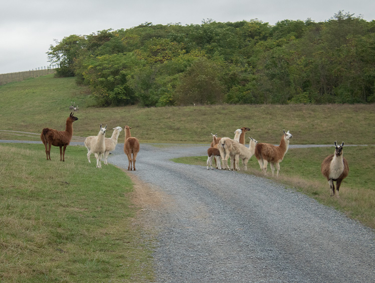
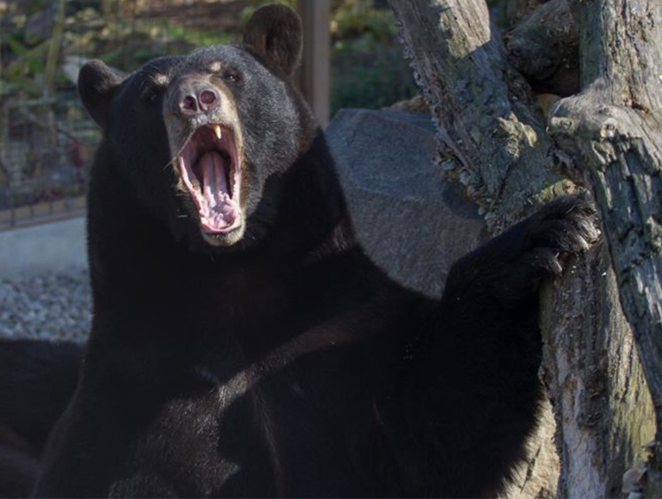
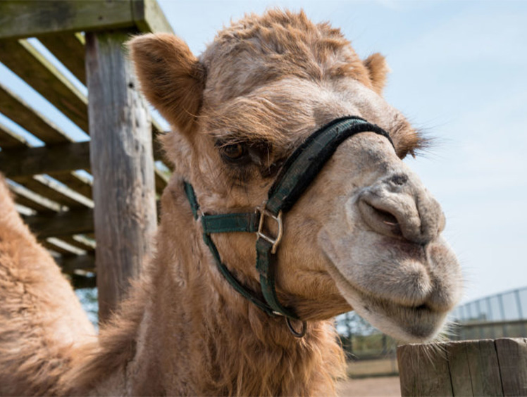

American alligators come from the south eastern part of the United States, including Florida, Alabama, Mississippi and Louisiana. They have a very broad head and rounded snout, where crocodiles will have a narrow head with a pointed snout. Alligators and crocodiles both have a blind spot right in front of their nose where they cannot see.
An alligator’s body is made mainly for the water, however, they can still move very quickly on land. In fact, they can run about 35 miles per hour but only for a short distance. Alligators can get up to 23 feet long and close their jaws at 2000 pounds of pressure per square inch.
Females will lay their eggs in a mound of rotting plants and mud and allow the sun and rotting vegetation to incubate the eggs. The heat in the nest will determine the sex of the baby alligators. If the eggs are kept at 89 degrees or lower, they will all hatch out as females. If they are kept at 91 degrees or higher, they will all hatch out as males. Any eggs kept at 90 degrees will be some male and some female.
Suri Alpaca

Alpaca come from the Andes Mountain in South America. Suri are one type of alpaca that have long hair which sometimes resembles dreadlocks. This hair can come in any color, usually black, white, brown or red.
Alpaca resemble small llamas and only weigh about 145 pounds. They are used for wool, meat and milk production. Alpacas always go to the bathroom in the same spot and prefer to give birth to young before noon when it is the coolest part of the day.
Aoudad Sheep
Information to come
Axis Deer
Information to come
Olive Baboon
Information to come
American Black Bear

The American black bear is the most common and widely distributed type of bear but are not always black. In fact, black bears can also be brown, blonde or even white. White black bears are called “Spirit Bears” and are generally rare. They are only found in Central and North British Columbia.
Black bears can stand between five to six feet tall and weigh over 500 pounds. They like to eat berries, fruit, fish and small mammals. Black bears will hibernate each winter at which time a mother will give birth to two young. In order to hibernate, especially for pregnant females, it is important to eat more in the months approaching winter. Their bodies will burn their fat resources while they sleep so they will not need to wake up during their hibernation to hunt for food.
North American Bison
North American bison come from the Great Plains area of western United States. At one point, millions of bison could be found roaming the Great Plains. Unfortunately, they were hunted nearly to extinction in the 1800s. Then the Federal Government stepped in and declared the bison an endangered species and banned all hunting. Since then, the American bison have repopulated their herds and are no longer endangered.
Baby bison are a dark red color until about 6 months old, when they turn dark brown like the adults. Some bison can be white, or a cream color, which is considered sacred by the Native Americans. Adults can weigh over 2000 pounds.
Bobcat
Information to come
Dromedary Camel

Dromedary camels have only one hump. Their hump is not used to store water like most people think. Instead, it is used to store fat resources which are used when food and water is scarce. They will eat any vegetation they can find and can drink up to 50 gallons of water at a time.
Camels have adapted to living in the desert by growing long eyelashes to protect their eyes from sun and sand. They can also completely close off their nostrils to keep sand out. Camels are used today for work, food, clothing, transportation and sport racing.